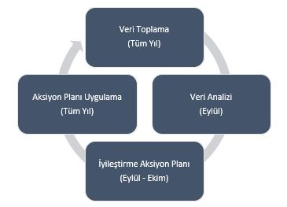
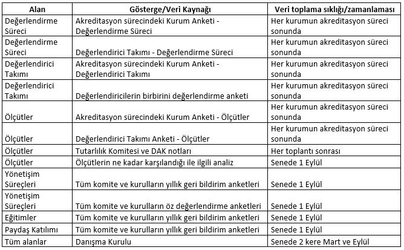

DEDAK Internal Quality Assurance System
DEDAK allocates September - October of each year to DEDAK Review processes. It collects data and indicators shown in the table below throughout the year for this review period. These data and indicators are converted into a report by the improvement committee and shared with DEDAK Board of Directors and DAK. These data and indicators are discussed in a full-day meeting of the improvement committee members, the education committee chairman, the WAC members and the Board of Directors, and an action plan is prepared in the light of the data. The action plan is implemented in accordance with the timetable planned along the way. The data collection process continues in the same way throughout this entire application process. In the next “Review” meeting, both the effectiveness of the improvements made and new improvement areas are evaluated in the light of data and indicators, and the action plans are updated. The follow-up of this whole process and its implementation is done by the improvement committee. The Improvement Committee reports both the implementation of the action plan and the analysis of the collected data every September and presents it to the relevant committees.


Downloads and source images are provided in their original language.